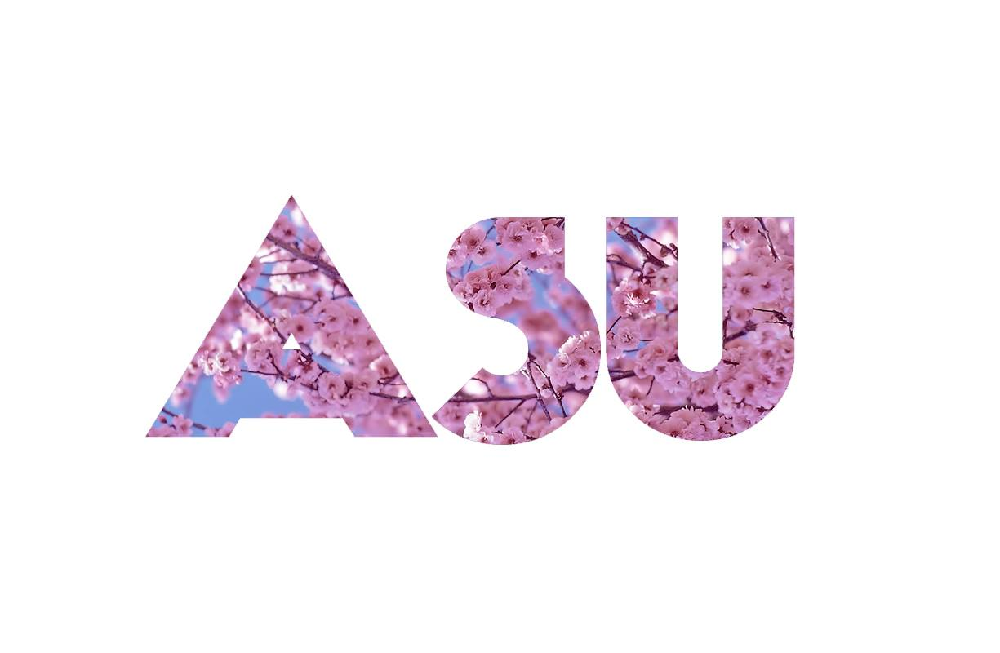
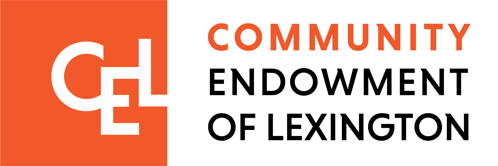
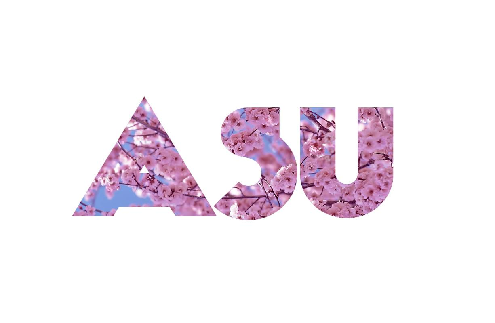
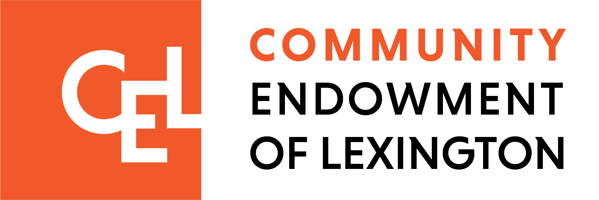

History Week
April 28-May 6
Come join us at the film screening for the award-winning film, Far East Deep South. The film explores the complex history of Asian Americans in the United States.
Learn more >Come join us at the film screening for the award-winning film, Far East Deep South. The film explores the complex history of Asian Americans in the United States.
Learn more >Art week narrates the Asian American experience through meaningful photography and illustrations created by members of our community.
Learn more >Creating a cookbook that features culturally significant recipes submitted by the families of the Lexington community.
Learn more >This final celebration week will feature a festival featuring food, music, and games following the AAPI 5k Run N' Walk.
Learn more >Lexington AAPI Youth Team is composed with town-wide public school students with a mission to promote AAPI heritage and culture. We initiate a month-long AAPI heritage celebration in May of 2022 and plan to celebrate AAPI heritage yearly in future. We aim to make the AAPI monthly celebration become a Lexington cultural tradition in May in Lexington community.
Collaborating with Chinese American Association of Lexington (CAAL), we are organizing our first monthly AAPI heritage celebration through aspects of history, art, and food in 2022 in Lexington, MA. Kicking off on April 28th, this year we will promote AAPI culture through history, art, and food. Each week of May will feature a different aspect of AAPI history, art, and food with a cumulative festival celebration on Memorial Day May 30th.
 


